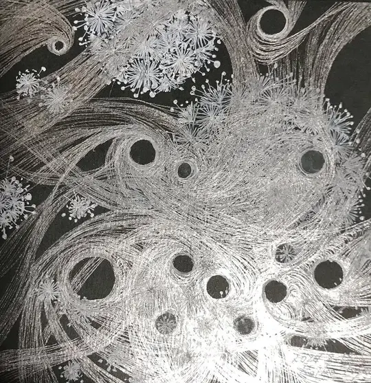
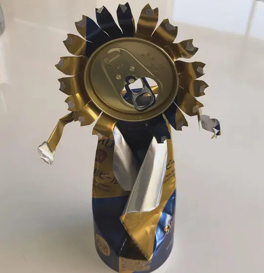
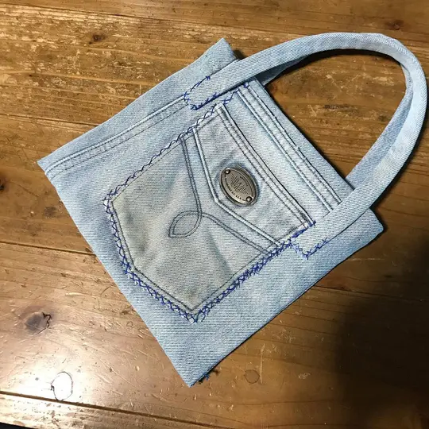
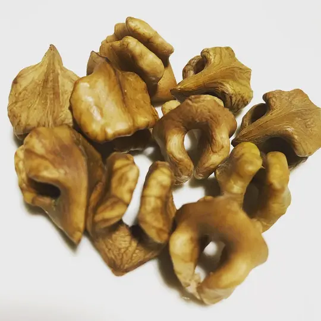
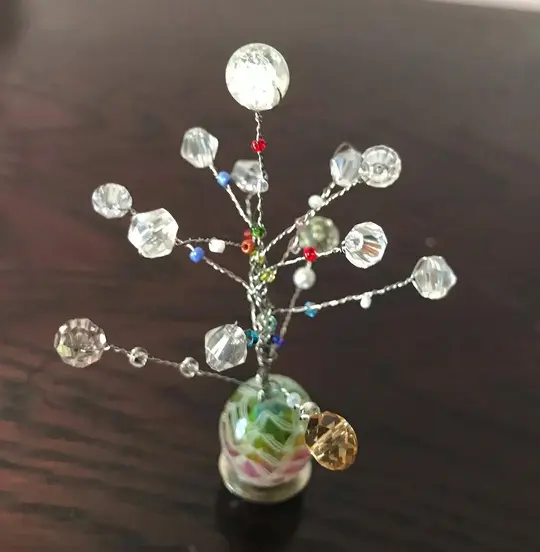

About
スタジオと作家

Studio Zero
地方の街角からだって、
何かを発信したい。
実験空間 Studio Zero は、作家・東條麗子が主宰するアートスペースです。
モノづくりを通した街づくりを掲げて、17年間にわたり企画展を開いてきました。
Artist
東條 麗子
Reiko Tojo
美術作家。実験空間 Studio Zero 主宰。絵画、オブジェ、そして本人が「手いたずら」と呼ぶ手仕事を制作しています。
黒地に白い線を重ねる線描は、1点に2週間ほどかかることもあります。2024年の春には、この線描が20枚ほどたまりました。
2022年、「大地の芸術祭」の里 越後妻有2022冬 SNOWART に、雪アート・新潟ユニットの一員として参加しました。雪の壁を掘ってつくる「雪壁ギャラリー」にも作品を出しています。
- 制作
- 絵画、オブジェ、手いたずら
- 主な素材
- 紙、墨・インク、ボールペン、張り子、ステンレスワイヤー、ジーンズ、新聞紙、杉、胡桃の殻、空き缶 ほか
- @reiko.0t
Tewaza
手いたずら
飲み終えた缶、履き古したジーンズ、オニグルミの殻、ネックレスの残りのとんぼ玉。東條が「手いたずら」と呼ぶ、身近な素材を使った手仕事です。

空き缶 → ひまわり 
ジーンズ → バッグ 
オニグルミの殻 → 小さな彫刻 
ネックレスの残りのとんぼ玉 → ワイヤーの樹